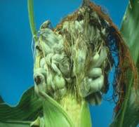

| Home |
| MAIZE |
mAJOR DISEASES |
| 1. Downy Mildew |
| 2. Sorghum downy mildew |
| 3. Phlippine downy mildew |
| 4. Crazy top |
| 5. Leaf blight |
| 6. Rust |
| 7. Head smut |
| 8. Charcoal rot |
mAJOR DISEASES |
| 1. Bacterial Stalk rot |
| 2. Mosaic |
| 3. Brown spot |
| Questions |
| Download Notes |
MAIZE :: MAJOR DISEASES :: HEAD SMUT
Head smut - Sphacelotheca reiliana
Symptoms
Symptoms are usually noticed on the cob and tassel. Large smut sori replace the tassel and the ear. Sometimes the tassel is partially or wholly converted into smut sorus. The smutted plants are stunted produce little yield and remain greener than that of the rest of the plants.
{kind=link}
|  |
Symptoms |
Pathogen
Smut spores are produced in large numbers which are reddish brown to black, thick walled, finely spined, spherical.
Favourable Conditions
- Low temperature favours more infection and this fungus also infects the sorghum
Disease cycle
The smut spores retain its viability for two years. The fungus is externally seedborne and soil-borne. The major source of infection is through soil-borne chlamydospores.
Management
- Field sanitation.
- Crop rotation with pulses.
- Treat the seeds with Captan or Thiram at 4 g/kg.